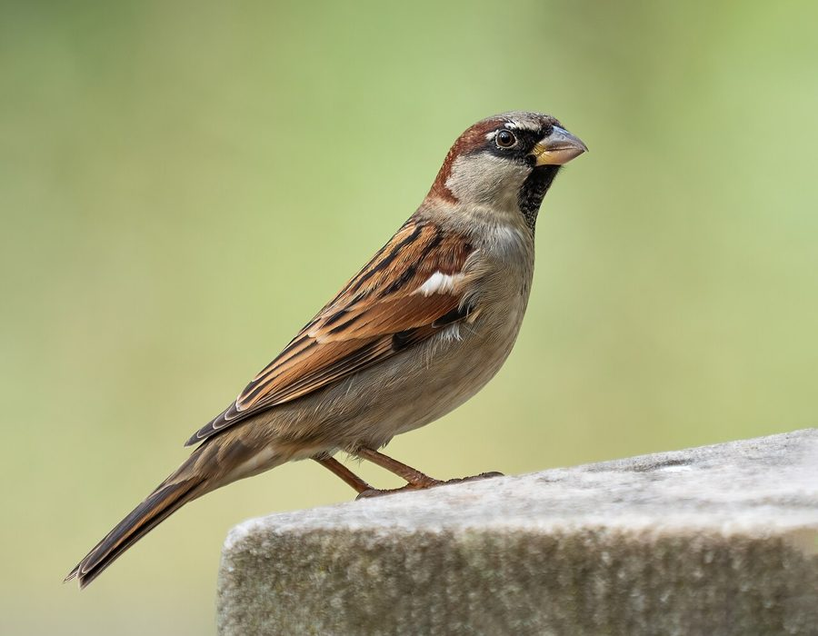

गौरैयाHouse Sparrow
Passer domesticus · Passeridae · BRD-0007

- Scientific name
- Passer domesticus (Linnaeus, 1758)
- Family
- Passeridae
- Hindi
- गौरैया
- Status here
- native
- IUCN
- LC
When to look कब देखें
Present all year.
गौरैया / House Sparrow
Passer domesticus (Linnaeus, 1758) — Passeridae
गौरैया — लगभग 10,000 साल से इंसान के साथ रहती आई है — जब से हमने पहली बार अनाज का भंडार बनाया। पूर्वी यूपी में गौरैया इतनी आम है कि हम उसे देखते ही नहीं। और इसीलिए उसकी घटती संख्या का हमें पता भी नहीं चलता।
हिंदी परिचय Hindi Overview
गौरैया (Passer domesticus) शायद दुनिया में सबसे ज़्यादा इंसान के करीब रहने वाली चिड़िया है। पूर्वी उत्तर प्रदेश के हर घर में, दालान में, आँगन में — गौरैया मिलती है।
लेकिन पिछले 20–30 सालों में गौरैया की संख्या काफी कम हुई है — दुनियाभर में, और भारत में भी। शहरों में तेज़ी से, गाँवों में धीरे-धीरे। कारण:
- कीटनाशकों का बढ़ता उपयोग — गौरैया के चूज़े पहले 2 हफ्ते पूरी तरह कीड़ों पर निर्भर हैं। कीट घटे तो चूज़े मरते हैं।
- घोंसले की जगह कम — पक्की दीवारें, RCC छत, और नई इमारतें घोंसले की जगह छीन लेती हैं।
- मोबाइल टावर की EMF — विवादास्पद; कुछ शोध में संबंध, लेकिन निर्णायक नहीं।
गौरैया शहरी पारिस्थितिक स्वास्थ्य का सूचक (indicator species) है। जहाँ गौरैया घटी — वहाँ कुछ और भी बदला।
Quick Identification त्वरित पहचान
| Feature | Description |
|---|---|
| Size | Small, stocky bird (14–16 cm total length); weight 25–35 g |
| Male plumage | Grey crown; chestnut back with black streaks; white cheeks; black bib on throat and upper breast |
| Female plumage | Plain sandy-brown above with darker streaks; dull grey-white below; prominent pale eyebrow stripe |
| Bare parts | Stout conical bill (grey in breeding, pale horn in winter); pinkish-brown legs |
| Behaviour | Highly gregarious; hops on the ground; bathes in dust or water; nests in wall crevices |
| Voice | Cheerful, repetitive chirping notes (cheep cheep), especially active at dawn |
Field tip: Look for the black bib on males — a larger bib indicates a more dominant male. Females are plain sandy-brown without a bib but have a prominent pale eyebrow line. They are almost always found in small groups around houses and shops.
Morphology आकारिकी
Biometrics (subspecies indicus, northern India — the form in eastern UP):
| Measurement | Range |
|---|---|
| Total length | 140–160 mm |
| Wing (flattened chord) | 71–80 mm |
| Tail | 50–60 mm |
| Tarsus | 16–19 mm |
| Bill (culmen from base) | 11–13 mm |
| Weight | 24–32 g |
Male: Crown grey, with chestnut sides. Nape chestnut. Back chestnut-brown, heavily streaked black. Wings brown with two whitish wingbars. Large white cheek patch. Throat and upper breast with a prominent black bib — size varies (larger bib = more dominant male). Underparts pale grey.
Female: Streaked brown above; buff-white below. Broad buff supercilium (eyebrow stripe) from bill base backward — this is the diagnostic feature for female identification. No black bib. Duller overall.
Bill: Stout, conical, grey in breeding season, pale horn in non-breeding season — adapted for seed husking.
Legs: Pinkish-brown.
Vocalisations
The House Sparrow's vocalisations are familiar, conversational, and highly social.
- Chirp/Cheep: The primary call, a loud, clear, rising cheep or chirrup used to maintain contact, announce presence, or declare ownership of a nest hole.
- Song: A repetitive series of chirps delivered by the male from a nesting site to attract a mate.
- Alarm call: A rapid, chattering chur-chur-chur or a sharp chitt-chitt given in the presence of cats, hawks, or other threats.
Ecological Role पारिस्थितिक भूमिका
Granivore: Adults mainly eat grain — wheat, rice, millet, sorghum, and weed seeds. In villages, they are permanent scavengers of threshing floors, grain storage areas, and kitchens.
Insectivore for chick-rearing: This is ecologically critical — chicks in the first two weeks must eat insects. Adult sparrows collect caterpillars, aphids, beetles, and other soft insects to feed nestlings. If insect populations crash (due to pesticides), sparrow chicks starve even if adult grain supply is adequate. This is the primary mechanism of population decline.
Dust bathing: Sparrows regularly dust-bathe in dry soil — a behaviour that removes ectoparasites (mites, lice). Communal dust baths in bare soil patches are a characteristic village scene.
Commensal niche: House Sparrow is one of the most tightly human-adapted birds on Earth. It nests in human structures almost exclusively (wild nests are rare) and depends on human food sources. Its population tracks human settlement patterns and agricultural practices.
The Decline घटती संख्या
House Sparrow populations have declined significantly across South Asia over the past 25 years. In Indian cities, losses of 60–80% have been recorded. In eastern UP's villages, the decline is slower but observable.
Documented causes:
- Loss of nesting sites: Modern RCC construction eliminates the gaps in old mud-and-brick walls that sparrows nest in. Roof tile replacement with flat RCC roofs is particularly damaging.
- Insecticide use: Agricultural and domestic insecticide use reduces the invertebrate food supply that chicks depend on.
- Food supply changes: Shift from grain-drying and threshing floors to machine harvesting reduces spillage grain. Less loose grain means harder living for adults.
- Mobile phone towers: EMF hypotheses remain unproven. Correlation with tower density exists in some studies, but causation is not established.
- Competition: House Sparrow and Common Myna compete for nest cavities. Myna is more aggressive and larger; sparrow often loses.
What you can do: Put up nest boxes (14 cm × 14 cm base, 4.5 cm entrance hole) in protected spots under eaves. Plant native shrubs (tulsi, lantana) as insect habitat. Avoid broad-spectrum insecticides.
Life Cycle / Phenology जीवन चक्र
- Breeding: February–September; 2–4 broods per year
- Nest: Untidy dome of grass, feathers, paper, string — stuffed into wall cavities, pipe ends, eaves, under roof tiles
- Eggs: 3–6, whitish with grey-brown speckling
- Incubation: 11–14 days
- Fledging: 14–16 days; fledglings continue being fed by parents for another 2 weeks
- Lifespan: 2–5 years in the wild (record 9 years)
- Non-breeding: No migration; same pair stays near the nesting territory year-round
Host Plants or Prey आहार
Primary food and prey:
- Grains of agricultural crops: paddy (rice), wheat, millet, sorghum
- Seeds of weeds and garden grasses
- Insects for feeding chicks: caterpillars, aphids, small beetles, and dipteran flies
- Household kitchen waste, baked scraps, and crumbs
Predators / Natural Enemies शत्रु
- Shikra (Accipiter badius) — primary avian predator of adult birds
- Feral Cats (Felis catus) — key predator around households and gardens
- House Crow (Corvus splendens) — raids nests in eaves and ventilators
- Common Mongoose (Herpestes edwardsi) — preys on sparrows feeding on the ground
Agricultural / Human Relevance कृषि और मानव संबंध
Pest control: Sparrows consume large numbers of armyworms, grasshoppers, caterpillars, and cutworms — all agricultural pests. Following tractors during ploughing to catch exposed soil invertebrates.
Fruit damage: Pecks at soft fruits (mango, guava, papaya, lychee) — causes economic loss to orchard farmers. Holes made by mynas are then used by other species (starlings, bulbuls).
Cultural significance:
- Myna (मैना) has been a beloved cage bird across South Asia for centuries — kept for its mimicry ability and its pair-bonding. Keeping native birds as pets is now illegal in India under Wildlife Protection Act 1972.
- "मैना ने कहा" — the talking myna is a stock character in Indian folk tales and children's stories.
- Pair loyalty of mynas is cited in Hindi poetry as a metaphor for faithful love.
Expected Locally स्थानीय रूप से अपेक्षित
Not a field record. Written from published accounts for eastern Uttar Pradesh. No confirmed local sighting yet — if you have seen it, that is what the atlas needs.
अभी तक स्थानीय पुष्टि नहीं। यह विवरण प्रकाशित स्रोतों से है, किसी अवलोकन से नहीं।
Extremely common around village homes and old grain markets in Basti district. Sparrows are highly vocal at dawn, chirping from vents, roof beams, and electric wires. They are frequently seen dust-bathing in dirt lanes and foraging on grain spills in courtyard threshing floors.
Distribution वितरण
Global range: Native to Europe, the Mediterranean basin, and most of Asia; widely introduced and established across the Americas, southern Africa, Australia, New Zealand, and numerous islands, making it one of the most widely distributed wild birds.
In India: Widespread and common across the entire country, including Lakshadweep and the Andaman Islands, from the plains up to about 4,000 m in the Himalayas, strictly associated with human habitation.
In Uttar Pradesh: Common resident across all cities, towns, and villages; populations are denser in rural areas than in heavily urbanized zones.
In Basti district / eastern UP: Common resident; present in almost every village household, dalan, market, and agricultural hamlet.
Range notes: No significant range changes documented.
Research Questions शोध प्रश्न
Anyone can investigate these | कोई भी इन प्रश्नों की जाँच कर सकता है
- How many sparrows nest in your household compound? / आपके घर में कितने गौरैया घोंसला बनाते हैं? — Count active nests in March, June, and September. Compare with elders' memories of 10–20 years ago.
- Do sparrows in your village dust-bathe in the same spots every day? / आपके गाँव में गौरैया हमेशा एक ही जगह मिट्टी में नहाती हैं? — Mark the dust-bath spot; observe daily; record how many birds use it.
- What insects do sparrow parents bring to the nest? / गौरैया के माता-पिता घोंसले में क्या कीड़े लाते हैं? — Watch a nest with chicks for 30 minutes; record every prey item brought. Compare across fields with different pesticide use.
- Are there fewer sparrows near buildings with cell towers? / मोबाइल टावर के पास गौरैया कम हैं? — Count sparrows in 10 minutes at 5 locations; record tower proximity. A small contribution to a large debate.
- Does putting up a nest box attract sparrows in your compound? / नेस्ट बॉक्स लगाने से गौरैया आती हैं? — Put up one nest box (instructions in Research Questions); record occupancy date and number of broods.
Similar Species मिलती-जुलती प्रजातियाँ
| Species | How to tell apart | हिंदी |
|---|---|---|
| Eurasian Tree Sparrow (Passer montanus) | Both sexes have chestnut crown + black ear patch; white cheek; no bib | पहाड़ी गौरैया — दोनों नर-मादा एक जैसे |
| Scaly-breasted Munia (Lonchura punctulata) | Scaly breast pattern; shorter bill; less associated with houses | मुनिया — सीने पर शल्क जैसा निशान |
Field rule: Small brown bird in or near houses + male has black bib on throat + female has pale eyebrow = House Sparrow. Tree Sparrow has chestnut crown and black ear patch (both sexes), not a bib.
Taxonomy & Classification वर्गीकरण
Original description. Passer domesticus was described by Carl Linnaeus in 1758 in the 10th edition of his Systema Naturae (p. 99) under the name Fringilla domestica. Type locality: Sweden. The genus name Passer is the classical Latin word for sparrow. The species name domesticus means domestic or belonging to the house in Latin, referencing its synanthropic habits.
Subspecies. Approximately 12 subspecies are recognised globally, divided into the domesticus group and the indicus group. The subspecies occurring in eastern UP is:
| Subspecies | Authority | Range | Notes |
|---|---|---|---|
| P. d. indicus | Jardine & Selby, 1831 | India, Pakistan, Sri Lanka, Myanmar, Middle East | UP subspecies; smaller, paler, and with whiter cheeks than nominate domesticus |
Family and order placement. This species belongs to the order Passeriformes and family Passeridae (true sparrows). Passeridae is a family of small passerine birds containing approximately 43 species in 8 genera, with Passer being the largest genus (~28 species).
Phylogenetic notes. Molecular studies show that Passer domesticus is closely related to the Spanish Sparrow (Passer hispaniolensis) and the Italian Sparrow (Passer italiae), with which it occasionally hybridises in contact zones in Europe.
IUCN status rationale. Assessed as Least Concern (LC). While global and national populations remain massive, significant declines have been documented in urban areas due to loss of nesting sites in modern buildings, reduced insect availability from pesticide use, and clean grain storage practices.
Photo Gallery फोटो गैलरी
Note: Add field photos tomedia/species/house_sparrow/
फोटो निर्देश: नर (काला बिब दिखाते हुए), मादा (आँख पर हल्की पट्टी), मिट्टी में नहाते हुए, घोंसले के छेद पर, और परिवार के साथ।
Photos needed आवश्यक फोटो
- [ ] Male — close-up showing black bib (नर — काला बिब)
- [ ] Female — showing pale supercilium (मादा — हल्की आँख-पट्टी)
- [ ] Dust bathing (मिट्टी में नहाते हुए)
- [ ] At nest cavity (घोंसले में)
- [ ] Family group foraging (परिवार का झुंड)
Atlas Connections संबंधित प्रजातियाँ
- Common Myna — nest-hole competitor; myna aggression implicated in sparrow decline in some UP villages (BRD-0006)
- Holy Basil — domestic tulsi plants near the house provide insect habitat used by sparrows for chick-rearing (FLR-0008)
- Neem — communal roost tree; sparrows often roost in neem alongside mynas (FLR-0009)
- Paddy — threshing floors and paddy grain are important food source; sparrow numbers track rice harvest season (FLR-0014)
References संदर्भ
- Linnaeus, C. (1758). Systema Naturae per regna tria naturae. Editio Decima, Reformata. Laurentii Salvii, Holmiae, p. 99. [original description]
- Jardine, W. & Selby, P.J. (1831). Illustrations of Ornithology. Vol. 3. Edinburgh. [description of indicus]
- Ali, S. & Ripley, S.D. (1987). Handbook of the Birds of India and Pakistan. Vol. 5. Oxford University Press, New Delhi.
- Grimmett, R., Inskipp, C. & Inskipp, T. (2011). Birds of the Indian Subcontinent. 2nd ed. Christopher Helm, London.
- Ghosh, S. et al. (2017). Decline of sparrows in India: causes and conservation. Current Science, 113(7), 1–8.
- BirdLife International (2024). Passer domesticus. IUCN Red List of Threatened Species. Ver. 2024.
- GBIF Occurrence Data — Passer domesticus, Uttar Pradesh (2010–2025).
Source file: species/fauna/birds/house_sparrow.md